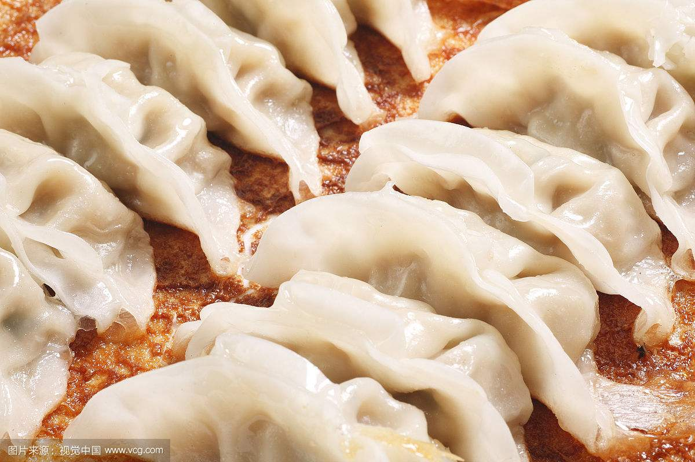

冬至食物大作战，你吃定哪一个？
冬至将至，各地人民，关于冬至应该吃什么，又争论起来，饺子？汤圆？冬至粿？在我看来吃什么不重要，跟谁吃才是答案，每逢佳节倍思亲，你冬至又是跟谁一起吃的呢？
在网络还没有那么发达的时候，我就理所当然的觉得大家冬至肯定吃的是冬至粿啊，哪会吃什么水饺汤圆呀。
那时候吃个水饺都得全家忙活半天呢，妈妈洗菜剁馅，爸爸则需要拿着一根比我人还高的擀面杖来擀面皮，记忆中菜刀敲击着砧板，擀面杖擀出大大白白的面皮，咕噜咕噜冒着水汽的大铁锅下噼里啪啦的火焰，昏黄的白炽灯下，是我跟姐姐期待的眼神，大概幸福就是如此吧!直至如今，我依然对饺子有所偏爱,但是那样热腾的饺子是再也吃不上了。

汤圆的话，那时候真的是少见的呢，好像村里也没有一个人会做汤圆的，也就不常吃到了。
冬至粿则是我们这疙瘩必不可少的冬至食物，冬至粿其实就是跟清明团一样的做法，只是冬至粿一般不加清明团里的青，是白色的，只用糯米粉制作的团，里面一般就包萝卜丝馅啊、笋干咸菜馅啊等当季蔬菜。包好后的冬至团放到蒸笼上那么一蒸，热气腾腾，香气扑鼻，掀开盖子，照亮了一年里最长的黑夜。

说到这里，除了以上的三种常吃的冬至食物外，还有其他的吗？相信我大天朝美食肯定比比皆是，一定还有很多未知的食物是过冬至时吃的。其实，每个节日最重要的并不是吃什么，而是能跟自己爱的人一起吃，无论是山珍海味还是粗茶淡饭，只要是那一张张亲切的面孔，充满温度的问候就已经心满意足了。节日就注定是为团聚而生，愿每一个节日都有你爱的人的陪伴！